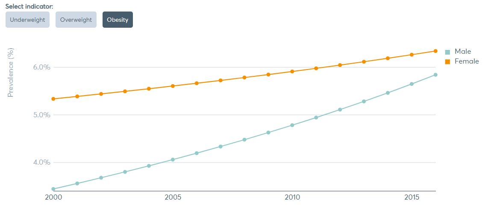
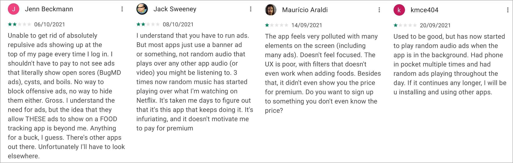
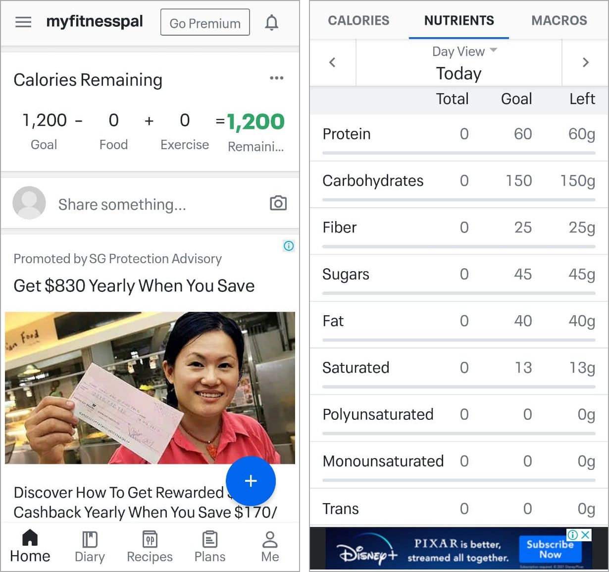

BiteSize
| Duration | Sep - Nov 2021 |
|---|---|
| Project Type | Individual, Student Project |
| Tools Used | Figma, FigJam, Google Sheets |

This case study is in the midst of being updated. Stay tuned for the full project! 😉
Overview
BiteSize is a dietary tracking and planning app specially catered for local diets, made as a student project submission for the NM3221 Mobile Interaction Design module.
Introduction
According to the Global Nutrition Report, Singapore has shown limited progress towards achieving its diet-related non-communicable disease (NCD) targets. Over the years, the Singapore government has spared no effort in initiating new campaigns to encourage Singaporeans to cultivate healthy eating habits, such as by declaring a War on Diabetes, or by hosting the Eat, Drink Shop Healthy Challenge. While there has been an uptick in the number of Singaporeans who have since adopted healthier eating habits, much remains to be done.
Problem Space
Diabetes
Over 400,000 people were revealed to have diabetes in Singapore during the 2016 Committee of Supply debates in Parliament (HealthHub, 2021).
One in three were not aware that they had the disease, while for those who were aware, one third had poor control of it.
It is projected that nearly one million people in Singapore will have diabetes by 2050 if the issue is left unaddressed.
Obesity
The prevalence of obesity has been on the rise for children and adults, both males and females, in Singapore.
The 2017 National Population Health Survey found that the prevalence of obesity among adult Singaporeans (aged 18 to 59 years) was 8.9%,
and that among seniors (aged 60 to 74 years) was 6.9%. Meanwhile, 13% of children (aged 6 to 18 years) are considered obese,
signifying an increase from the 11% in 2013.

This presents a pressing problem space to address, which BiteSize aims to help tackle.
Research Design
Preliminary Research
I first sought to understand the current app options available in the market and identify some potential areas of
improvement in existing apps. Currently, the most widely used app to track healthy eating both globally and in Singapore is MyFitnessPal.
-
To find out general user sentiments on MyFitnessPal, I first looked at reviews on the Google Play Store. Some pain points identified include:
- the user interface is cluttered with random advertisements, making for a very unpleasant user experience. One of the first things users see when they open up the app is a large advertisement, rather than relevant information such as their nutritional intake information or progression towards their health goals. 
- the interface is also very information dense, which can be intimidating for new users who are unfamiliar with certain terminology, leading them to feel overwhelmed by all the features and information available. 
- Furthermore, MyFitnessPal is not designed to specifically cater for local diets nor is it targeted at local users, which can lead to inaccurate nutritional tracking.
Following the preliminary research conducted, I proceeded with primary research where I identified a target user group and find out more specific information on use cases.
Primary Research
Target Users: Singaporeans who are conscious about their eating habits and wish to pursue a healthier lifestyle.
I employed semi-structured interviews to gather insights into my broader research goals, which was split into 2 main sections:
(i) interviewee demographics and (ii) healthy eating habits and usage of relevant applications.
3 interviewees covering a broad range of demographics were selected.
They ranged from ages 18 to 56, with males and females who are currently undergoing different stages in life (schooling and working) in order to cover
as wide a range of scenarios as possible. The interview answers were recorded and then organized into various sticky notes for thematic analysis.

Insight 1: Younger interviewees (blue and pink) acknowledged that healthy eating is important, but stated that they do not really commit to making healthy lifestyle choices. Conversely, the older interviewee (yellow) is more conscious about available food choices and healthier alternatives.

Insight 2: Younger interviewees (blue and pink) do not really use health-related apps, citing “laziness” or a lack of discipline to commit to regular usage. Meanwhile, the older interviewee (yellow) uses health-related apps such as Healthy 365 regularly in relation to shopping for healthier-choice groceries, and other similar apps that provide incentives for engaging in health-related activities.
Extrapolating from the interview findings, Singaporeans may place different degrees of importance on healthy eating/lifestyle depending on their age and stage in life. While older Singaporeans may be more incentivized to make lifestyle choices that are good for their health, younger Singaporeans may prioritize convenience instead.
Problem Statements
These interview insights can be summarised in the following problem statements:
- Health-conscious Singaporeans need an easy and convenient way to log their food so that they can track of their nutritional intake more consistently and accurately.
- Health-conscious Singaporeans need an easy way to prepare healthy and delicious food according to their dietary needs because they want to maintain good health over the long run.
User Personas
Based on the different interviewee profiles and pain points raised, I created 2 user personas to better represent the different sets of pain points that are likely to be faced by users from 2 different age groups (younger versus older Singaporeans).


Introducing BiteSize
Designed specifically for users based in Singapore, BiteSize will incorporate nutritional guidelines and food composition data by the Health Promotion Board (HPB) to recommend suitable dietary plans in a fun and engaging manner. The app will feature a robust dataset of nutritional information for popular dishes found in Singapore, and incorporate data on healthier eateries, caterers, and food choices based on the publicly available data at Data.gov.sg. Most importantly, Bitesize will prioritize convenience and ease of use when it comes to food logging and preparation of healthy meals for beginners.


Lo-fi Wireframing